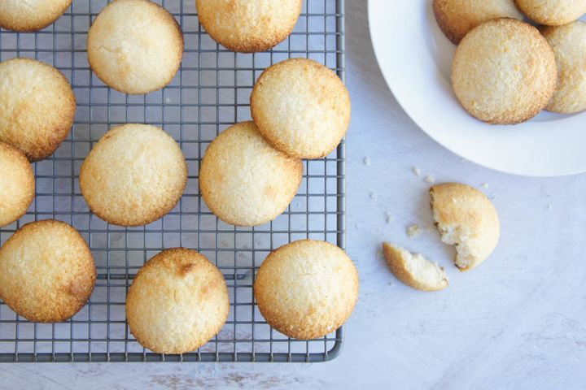

Chewy Macaroons

Description
My favourite biscuits and only 2 ingredients needed!.
Ingredients
250 g desiccated coconut
395 g condensed milk
Steps
- Preheat oven to 160C.
- Mix ingredients well together, using enough milk to hold mixture together.
- Put heaped teaspoonfuls onto greased biscuit trays.
- Cook for about 15 minutes or until tops have a brown tinge but are still soft in the centre.
- Cool on trays for a few minutes before transferring to wire racks to cool.
- Store in air tight container.
Home